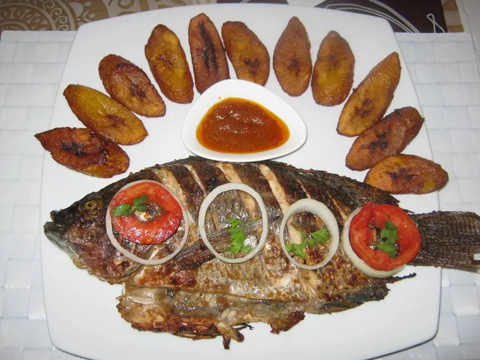

Poisson braisé

Description
This is a delicious braised fish dish that you will find in every corner
of every major city in Africa. It is basically a spicy fish dish infused
with fresh spices and herbs. Feel free to use your favorite fish for your
braised fish dish.
Ingredients
- 2 large fish of your choice
- 1 large tomato
- 1 large onion
- 1 head of garlic
- 1 handful of parsley and celery
- 1 green bell pepper
- 1 piece of ginger
- 3 balls of chili pepper
- 10 grains of akpi or djanssan
- black and white pepper ground Nora
- salt and oil
Steps
-
Cut all the ingredients and mix with a blender or mortar and add salt,
Nora ground black and white pepper, grilled and crushed akpi or
djanssan, mustard and a little oil. Stir well.
-
And marinate the fish with the marinade and let it rest for at least 1
hour in a cool place so that the fish soaks up the marinade.
-
Then go to the braising without forgetting to sprinkle the fish with the
marinade during the cooking.
-
I accompanied my braised fish with alloco. For the pasta on the side,
it's just the marinade that I cooked.